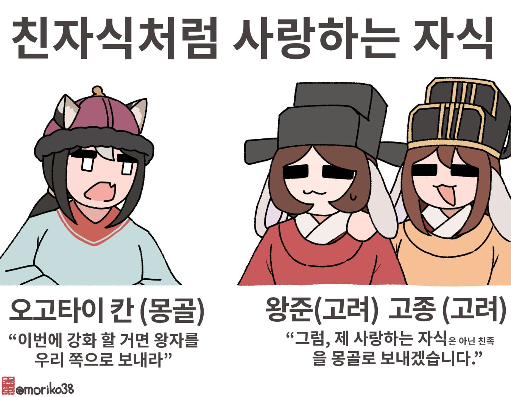
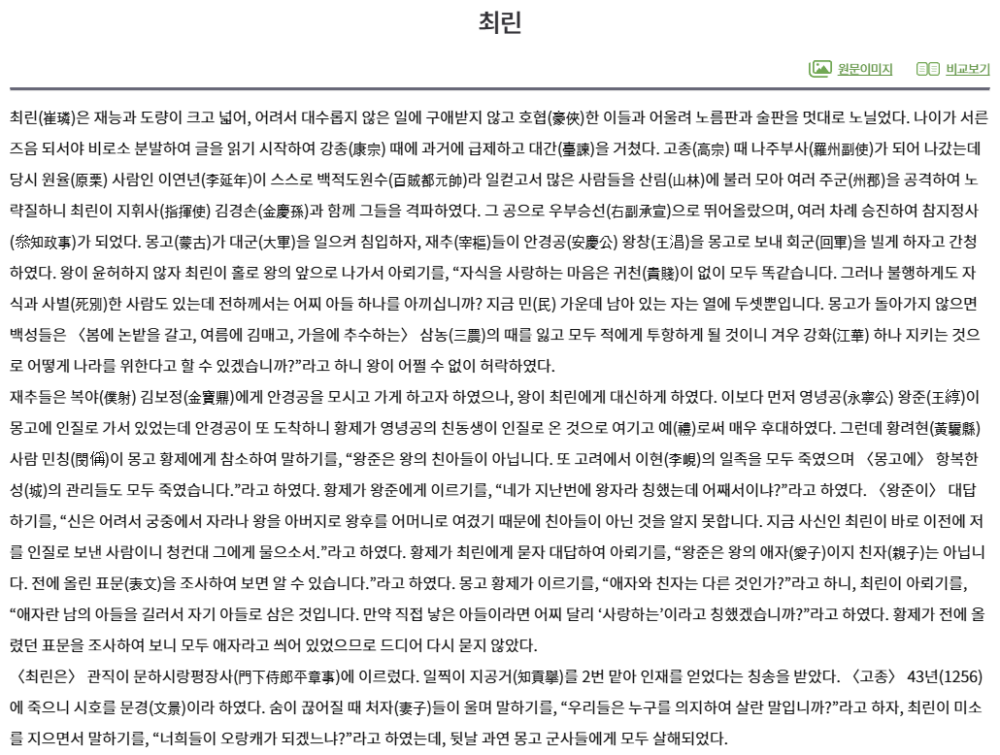

3차 여몽전쟁 당시, 몽골은 강화를 원하면 왕자를 입조시키라 지시하였다.
이에 고려는 왕자가 아닌 왕족 영녕공 왕준을 몽골로 보내며, 서신에는 친자 대신 애자(사랑하는 자식)이라 적어 보냈다.
몽케 칸이 즉위한 후, 황려현의 민칭이라는 사람이 왕준이 왕자가 아닌 사실을 알렸고, 몽케 칸은 곧 왕준을 심문했다.
이에 왕준은 자신은 어려서 부터 왕과 왕비를 어버이로 삼아 친자가 아닌걸 알지 못하였다며, 사신 최린에게 물어보라 말하였다.
다시 몽케 칸이 최린을 호출하자, 최린은 왕준은 왕의 애자이지 친자가 아니며, 일찍이 적은 표문에도 모두 애자라 적혀 있음을 언급 하였다.
실제로 이전애 올린 표문에는 모두 친자가 아닌 애자라는 말이 적혀 있었고, 결국 칸은 당시에는 더이상 이를 추궁하지 않았다.
이와 별개로 몽케 칸은 1253년 부터 1259년 까지, 여몽전쟁 중 5차부터 9차까지의 침략을 일으킨 인물이다.

아무튼 아들이죠?